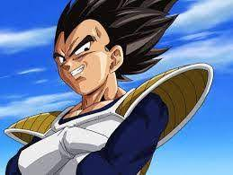

|  | Vegeta (ベジータ Bejīta?) ( /vəˈʤiːtə/ və-JEE-tə), también conocido como Príncipe Vegeta (ベジータ王子 Bejīta-ōji?) o alternativamente con el estilo Vegeta IV (ベジータ四世 Bejīta Yon-sei?),1 es un personaje de ficción de la franquicia Dragon Ball creado por Akira Toriyama |